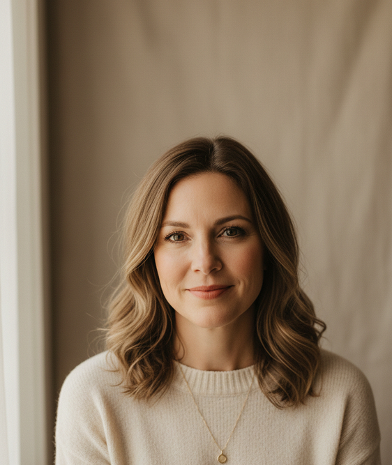

Relationship Coaching for Couples
Find your way back to
each other.
Warm, judgment-free support for families navigating conflict, communication breakdown, or emotional distance. Together, we'll find a path back to connection, calm, and a home that feels like home again.
Private online sessions · Compassionate & judgment-free Compassionate & free of judgment
What may be bringing you here
What We Work With Most Often
Family crises rarely start overnight. Usually it is a chain of unnoticed compromises that eventually lead to a wall of misunderstanding.
-
Repeating Conflicts
When the same argument keeps circling without a visible solution, leaving only exhaustion and hurt.
-
Emotional Distance
Feeling alone together, when former closeness has given way to purely practical interaction and silence.
-
Communication Challenges
Every attempt to openly discuss what is bothering you quietly turns into mutual accusations, criticism, and defensive silence.
-
Loss of Mutual Trust
The weight of past hurts and unspoken words makes it hard to open up to your partner again, trust them, and feel safe.
-
Difficult Transitions
Parenting crises, children growing up, changing roles, or external pressure that requires new rules for living.
-
Differences in Parenting
Different views on boundaries and your children's future create constant tension and undermine parental authority.
“Healing doesn't mean fixing what was broken. It means finding the quiet space where we can begin to hear one another again.”Learn the Methodology
What you can expect from
working together
Open, respectful communication
Families learn to truly hear each other, share feelings without fear, and build a culture of empathy and understanding.
A safe, peaceful home environment
Create a calm and nurturing space where children feel secure, supported, and free to grow and thrive.
Clarity and confidence in family decisions
Gain the clarity and confidence to make decisions that align with your values and support your family's long-term well-being.
Rebuilding trust and connection
Reconnect as a family and rebuild trust through gentle, step-by-step practices that bring warmth and closeness back into your home.

Meet your coach
Hi, I'm Sarah Hartwell
Over the last fifteen years, I have helped hundreds of couples and families navigate their darkest relational seasons. My approach is warm but structured, compassionate but entirely honest.
I believe we all want to be seen, heard, and valued. When stress, child-rearing, or life transitions obscure that, we retreat into self-protection. My work is to help you put down your defenses and find the partner you once knew.
Stories
From cold silence to comfortable laughter
Every couple and family arrives believing they might be the exception that cannot be
fixed. Here are a few who found their way back.
Common Questions
Coaching is a great fit when you want practical tools and a structured path forward. It's especially helpful when you're motivated to work together, but need guidance on how to communicate safely and rebuild connection. We can explore whether coaching feels like the right next step during your discovery call.
Take the first step
Let's begin the journey back.
No commitment is required. Our initial 20-minute discovery call is purely a safe space to discuss your needs and see if we are a relational fit.
Schedule Your Free CallCurrently booking sessions for next month.